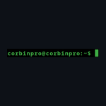
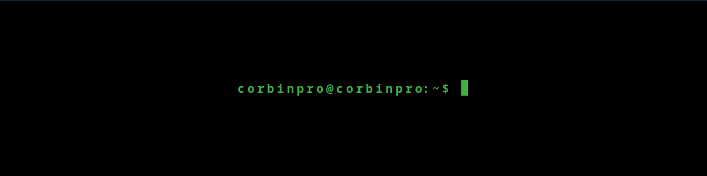

Color Scheme
#F5F5F5
#FFFFFF
#1A1A2E
#6C757D
#4E9A06
#73D216
#0D1117
#E1E4E8
- Primary BG — #F5F5F5 — Page background
- Secondary BG — #FFFFFF — Sections
- Primary Text — #1A1A2E — Body text, headings
- Secondary Text — #6C757D — Captions, meta info
- Accent — #4E9A06 — Links, buttons, highlights
- Accent Hover — #73D216 — Hover states
- Dark Accent — #0D1117 — Header/footer, code blocks
- Border — #E1E4E8 — Dividers, borders
Fonts
The site uses the system monospace font stack exclusively.
This matches the XFCE terminal environment and reinforces the terminal-prompt
style of the logo. No external fonts are loaded.
- h1 — 2em, bold
- h2 — 1.5em, bold
- h3 — 1.25em, bold
- Body — 1em, normal
- Line-height — 1.6
Logo



Navigation
Persistent top navigation bar across all pages. Logo on the left, nav links on the right.
Home — Projects — Resume — Contact
Footer on all pages includes email link and LinkedIn profile link.
Dynamic Elements (JavaScript)
Four JavaScript features covering required concepts: multiple functions, DOM interaction, conditionals, objects, arrays, and array methods.
1. Project Filter (Projects page)
An array of project objects with category properties. Uses
filter() to show projects by category (All, Embedded, CV,
Automation). Dynamically renders filtered results to the DOM.
2. Contact Form Validation (Contact page)
validateField() and handleSubmit() functions
with event listeners. Uses conditionals to check required fields and
display DOM error messages.
3. Theme Toggle (All pages)
Light/dark mode toggle using CSS custom properties. Stores preference in
localStorage. Uses an object for theme configuration
(colors, icon states).
4. Typing Animation (Home hero)
An array of role strings ("Embedded Engineer", "Software Developer", etc.)
cycled with setInterval. Modifies DOM text content to create
a typewriter effect in the hero subtitle.
Page Content
Home
- Hero section: logo, name, typing subtitle animation, tagline
- Intro paragraph (3 sentences about embedded systems background)
- Two featured project video embeds:
- Computer-Vision Turret (C-RAM)
- Drone RF Signal Detector
- "View All Projects" button linking to Projects page
Projects
- Filter buttons: All | Embedded | CV | Automation
- 4 project cards in responsive grid:
- Drone RF Signal Detector — SDR-based drone detection using signal analysis
- Computer-Vision Turret (C-RAM) — YOLO-based object tracking with PID-controlled turret
- RFID Authentication Research Device — Embedded RFID security research platform
- Automatic G-Code Editor — Automated CNC toolpath optimization
Each card includes: YouTube embed, description, and tech tags.
Resume
- Formatted resume sections: Education, Skills (by category), Experience, Projects
- Download PDF button
Contact
- Form fields: Name, Email, Subject (dropdown), Message, Submit button
- Sidebar with direct contact info (email, LinkedIn)
Wireframes
Home Page

Projects Page

Resume Page

Contact Page

Photo / Media Placeholders
- Home — Hero image — Professional headshot or workbench candid
- Home — Featured videos — CV turret tracking demo, RF detector spectrum display
- Projects — Card thumbnails — SDR setup, turret mechanism, RFID prototype, CNC machine
- Resume — Headshot — Professional headshot